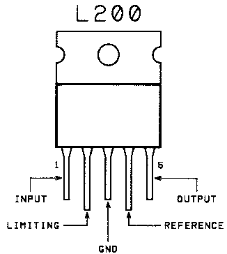
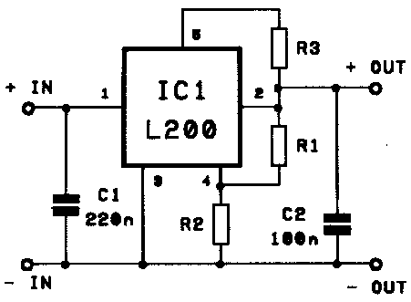

WHY? If you buy a commercial bike lighting system, it most likely comes with a lousy charger. For example, with my VistaLite 430 I got a charger that provides 7.5V/300mA DC to the battery. There are two problems with this. First, the charger doesn't charge the battery particularly fast (because it doesn't put much current into it). Second, when it's done charging, it's still applying 7.5 V across the battery, which will probably damage the battery if it's left plugged in for more than about a day or two.
The lighting maufactorers would like to be able to include a better charger with their systems, but the cost for a smart charger is prohibitive for something that doesn't obviously increase the performance of your lights. Thus they make do with the simple chargers they include, and they issue many warnings to disconnect the charger after a certain period of time.
Here's how to make a good charger for a sealed lead-acid battery (this will NOT work with NiCad batteries) that's faster (because it allows more current into the battery initially) and safer (because it uses lower voltage when the charging is finished). The battery can be left plugged into this charger indefinitely, and it won't bother it in the slightest. In fact this is the "float" or "standby" charging method recommended by battery manufacturers. Below is a circuit based around an L200 chip. (Note to US residents: the L200 is more easily available in Eurpore than in the US. I hear that they are available in the US from BG Micro. If BG has run out, you may consider an equivalent made from an LM317 chip.) This is a well-known circuit; the diagram below, copied from More Advanced Powed Supply Projects by R.A. Penfold, is almost identical to one found in a Maplin Electronics catalog which sells the chip. The charger can be used for both 6V and 12V batteries.
Please note that this is not a smart charger. A smart charger charges at a high voltage (the "fast" or "bulk" charge voltage), and then, when it detects that the battery is full, it switches to a lower ("float" or "standby") voltage. This charger just sets the voltage to the float voltage all the time. The only disadvantage of this charger over the smart charger is that this charger charges the battery more slowly. Both types of charger are very good for the battery and will not harm it in any way, even if left attached for weeks.
I myself am not much of an electronics person. Thanks go to Simon Moore for helping me to understand the nuances of this circuit.
Maplin sell a little kit with all the bits in it. However it's a fair bit more expensive than just buying the parts yourself and soldering them to a strip board.
You need the following parts:
- an L200 chip
- an AC/DC converter
- a strip board and wires
- a few resistors (including one variable resistor) and capacitors
- a box to put it all in, preferably aluminum
- connectors for your battery and the AC/DC converter
- various screws to put everything together
You need the following tools:

- a soldering iron
- a multimeter (well, probably just a voltmeter would do)
- a drill to put holes in your box
- various files, screwdrivers, and wrenches
The main body of the L200 chip (made by SGS-Thomson) is about 1cm on a side, and it has 5 pins and a tab for attaching to a heat sink. The chip as used in the circuit below acts as a voltage regulator with current limiter. The current limiting aspect is important in order to keep the current within the range that the AC/DC converter can safely deliver.

The capacitors C1 (of 220 nanoFarad) and C2 (of 100 nanoFarad) smooth out the input and output voltages. This is important because the L200 has a feedback loop where it takes voltage readings that depend on its output and then changes its output in responce. This can induce some oscillations in its output. The size of the capacitors is appropriate for smoothing out this frequency.
R2 should be an 820 Ohm resistor. R1 should be a variable resistor, with maximum value somewhat larger than the computed ideal resulting from the second equation. It's best if it can be adjusted very finely, as you want to be precise about the output voltage of your charger. The value of R3 sets the maximum current the circuit will produce (up to about 2A). The relevant equations are:
Vout (in volts) = 2.77 * (1 + R1 / R2)
R1 = (Vout/2.77 - 1) * R2
R3 (in Ohms) = 0.45 / Imax (in amps)
where Vout is the voltage drop across the output (between + OUT and - OUT, this is the voltage applied to your battery), and Imax is the maximum charging current. To determine what Imax should be, find the manufactorer's charging recommendations for your battery. Some batteries, like my Hawker Cyclon don't need to have the current limited when they are being charged with constant voltage. Still, you have to pick some value, and you'll want it to be less than than the 2A max that the L200 will deliver and less than the max current your AC/DC converter is rated for (which is clearly written on the converter). I used a resistance of about 0.5 Ohms to limit it to about 1A, as the AC/DC converter I used (see below) is rated for 1A.
You can see that with this circuit you'll get an output voltage anywhere between about 3V and 33V. Thus, practically speaking, it can be used as a charger for either a 6V or 12V battery depending on how you set the resistor R1, and which AC/DC converter you use.
I have no idea how the L200 does what it does, but I'll tell you roughly how it operates in this circuit. Pin 5 provides the output power. All the current coming from there goes through R3. Pin 2 is an input to an internal voltmeter, which detects the voltage drop between Pins 5 and 2. If this voltage drop is greater than 0.45 V, then there too much current going out. Pin 4 is an input to another internal voltmeter, which detects the voltage drop between Pins 4 and gnd (Pin 3). The L200 sets the voltage on Pin 5 so that the voltage on Pin 4 is 2.77, assuming the current is lower than Imax. But if there too much current on the output, it drops the voltage on Pin 5 to keep the current in bounds. In this case you'll get less than your desired voltage on the output.
Since all the current on the output flows through R3, it can get hot. The relevant formula is P = V*V/R, so the maximum power going through it is 0.45 * 0.45 / R3. Since I set R3 to about 0.5 Ohm in my circuit, I had about 0.5 W being consumed by the resistor. Make sure you have a resistor that will tolerate the heat you're putting into it.
The L200 can get pretty hot as well. Attach the metal tab to a heat sink. If the box you're putting it into is alumimium, and you're not generating too much heat, attach it to this. The maxumim power dissapated by the L200 can be estimated by the (Vin - Vout) * Imax, where Vin is the voltage across the input. With my circuit, this is about 2V * 1A = 2W. This is not too much and it is sufficient to attach the tab to the box (I find that the box does not get hot as the battery charges). Note that if you do this, the metal tab is connected internally to Pin 3 (gnd), so this will make your box grounded. If you're dissapating too much power in your L200 you might contemplate attaching the chip to a commercial heat sink and drilling lots of holes in your box.
Connections for power and battery. You need to supply power to this circuit. By far the easiest way is to get a cheap AC/DC converter. The L200 requires that Vin is at least 2V higher than the desired output voltage (Vout). But if it's much higher you'll lose alot of power in the chip, which just acts as a very smart variable resistor. If you're charging a 6V battery, you'll need Vout to be something like 7V, and so Vin should be about 9V. I have a 9V/1amp converer, and that works just fine. To charge a 12V battery, you'll need Vout somewhere about 14V, so use a 16V or 17V input.
Presumably, your converter has a plug of some kind on it. Buy a matching socket and put it in your box. Pay attention to the polarity of the plug. If the outside part of the plug is positive and you've got a metal box and have attached the L200 to it, then make sure you get an insulating socket.
You'll also have to hook up your battery. Get a socket that matches the plug on your battery and install that in your box, again paying close attention to the polarities.
Selecting output voltage. Find the charging recommendations for your battery and choose a voltage somewhere in the float charging range. Power up your circuit (attach the AC/DC converter and plug it in, but don't attach the battery) get your multimeter, and adjust R1 until the voltage Vout is correct.
Here is an example for setting the voltage. My battery is a 6V Hawker Cyclon Monobloc, which consists of three Cyclon cells encased in a plastic shell. The charging info page for the battery shows this table:
Constant voltage (CV) charging should be within the following ranges: Fast Chargers: Per cell: 2.45 to 2.50 volts @ 25°C 12 volts: 14.70 to 15.0 volts @ 25°C Float Chargers: Per cell: 2.27 to 2.35 volts @ 25°C 12 volts: 13.62 to l4.10volts @ 25°CThe voltage in the charger (Vout) should be set to something in the float range. I chose 2.3V/cell. Since the battery has three cells, that gives a desired voltage of 6.9V.Plug in your battery. It is charging now. I'm not sure how long it will take to charge. I didn't time the initial charge of my 5 amp-hour battery. I put the finishing touches on my charger about 9pm and monitered the initial inrush of current. I left it still charging when I went to bed, and when I woke up it was done. So probably your battery will charge up overnight (10 hours?) as well.
How to reassure yourself that it's working. The best way to check that the circuit is working is to monitor the current as it flows into your battery. Recall that all the current goes through resistor R3. So you can get a good estimate of the current going into your battery by measuring the voltage drop across the resistor. Use the formula I = V / R (where I = current in amps, V = voltage in volts, R = resistance in ohms) to get the current flowing through the resistor (since you know R3's resistance).
Initially, if your battey is discharged, the maximum current (Imax, as described above) should be flowing through R3, and your voltage drop should be .45 volts. As the battery fills up, the voltage (and hence current) will drop, until eventually the calculation gives you only a few tens of milliamps flowing into the battery.
More bike and light articlesIf you leave your battery connected to the charger but unplug the AC/DC converter that provides the power, you end up with the input voltage of the circuit disconnected while the output voltage is still present. Some regulators can be damaged by this, and thus diodes are put into the circuit to protect them. However, my electronics expert, Simon, says that this is highly unlikely as the L200 is a very robust chip, and you shouldn't worry about this. In fact I left the battery plugged into the charger without plugging in the AC/DC converter for a couple of hours, and it didn't seem to harm the charger; it works just the same now as before.